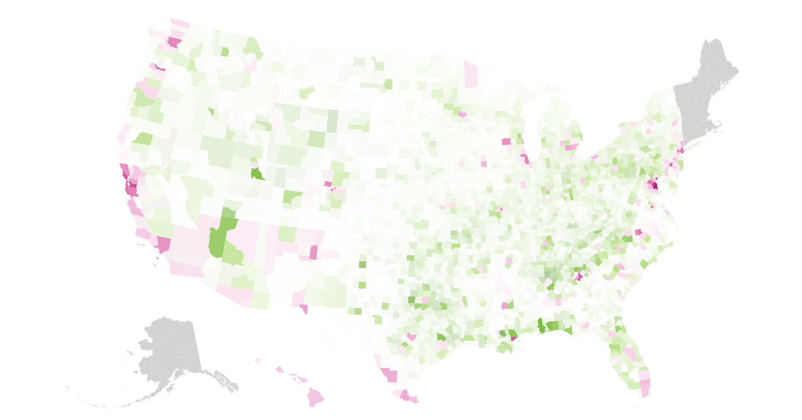
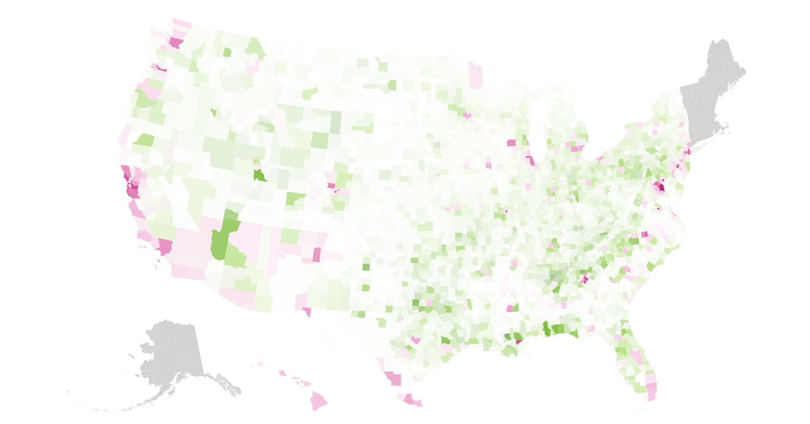

Mapping with d3
Making an election choropleth using d3.js, additionally the opacity indicates how many people live in each county. The chart was created during the Lede Program for ‘Storytelling with Data’ with Jonathan Soma. View code
Making an election choropleth using d3.js, additionally the opacity indicates how many people live in each county. The chart was created during the Lede Program for ‘Storytelling with Data’ with Jonathan Soma. View code
